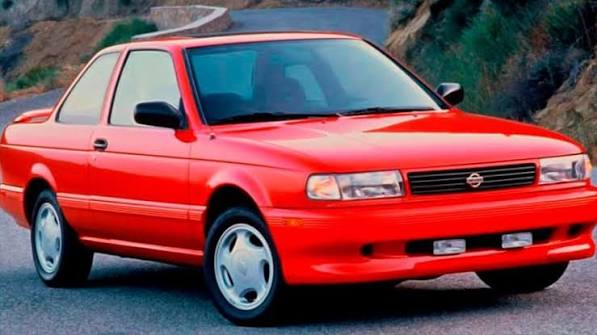

Modelos emblemáticos del Nissan Tsuru
Conoce dos de las versiones más representativas que marcaron la historia del Nissan Tsuru en México, desde las versiones familiares hasta su variante deportiva.


Galería optimizada del Nissan Tsuru
Esta imagen utiliza formatos modernos como AVIF y WebP con respaldo en PNG y carga diferida para mejorar la velocidad del sitio.
Presentación en video del Nissan Tsuru
Mira un recorrido audiovisual sobre el Nissan Tsuru, sus versiones y su presencia en rodadas y encuentros automotrices.
Podcast y audio sobre el Nissan Tsuru
Escucha episodios, charlas de taller y experiencias reales de conductores y restauradores del Nissan Tsuru.
Reseña y documental en YouTube sobre el Nissan Tsuru
Reproduce un video externo de YouTube con análisis, historia y pruebas del Nissan Tsuru directamente dentro de la página.
Ubicación de referencia del Nissan Tsuru
Consulta la zona de referencia de Nissan CIVAC en Morelos mediante un mapa interactivo incrustado con Google Maps.
Nissan Mexicana — Planta CIVAC, Boulevard Paseo Cuauhnáhuac Km. 4.5, Jiutepec, Morelos, México.